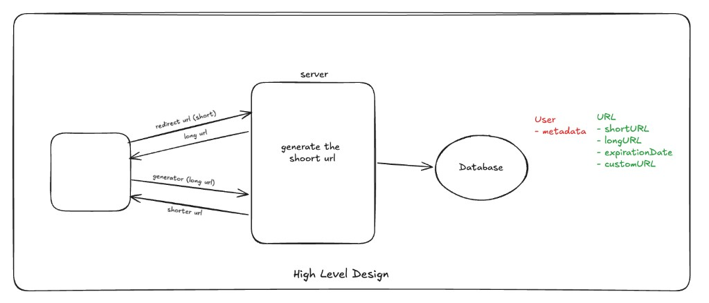
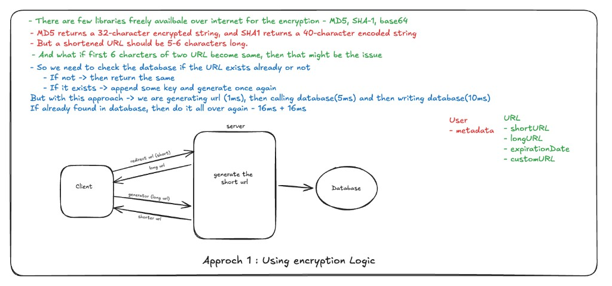
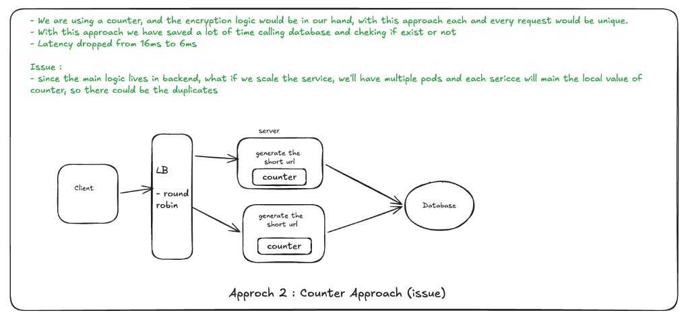

Summary
Comprehensive system design walkthrough for building a URL shortening service, a common interview question. Introduces a structured framework: gathering requirements, defining core entities, designing APIs, and iterating from high-level to low-level design with scalability, reliability, and performance in mind.
Key Concepts and Framework
System Design Framework (5 Steps)
- Requirement Gathering: Functional & non-functional requirements
- Identify Core Entities
- API Design
- High-Level Design
- Low-Level Design
Problem Statement
Design a system that converts long URLs into short, easy-to-share URLs. One-to-one mapping between each active short key and a long URL. Users provide a long URL; the system returns a shortened form. When the short URL is accessed, the user is redirected to the original long URL. Optional capabilities (custom short keys, expiration) can be layered on top of this core flow.
Functional Requirements
- Create a short URL from a long URL
- Optional: support a custom short URL (user-chosen slug)
- Optional: support an expiration date (short link stops redirecting after that time)
- Redirect — given a short URL, the user is sent to the original long URL
Non-Functional Requirements
- Low latency: URL shortening and redirection within ~200 ms
- High availability (redirect path): From a CAP perspective, the system should stay highly available for redirects—users should usually reach the redirect service and get a valid response even under partial outages or replication lag. We deliberately do not require the same bar for immediate consistency everywhere.
- Scalability: ~100 million daily active users, ~1 billion URLs shortened
- Uniqueness: Shortened URLs must be unique
- Eventual consistency: It is acceptable if a newly created mapping is not reflected instantly on every replica or cache edge—there may be a short delay between creating a short URL and successfully hitting it. Availability over strict, immediate consistency is the right trade-off here: redirects should keep working; perfect read-your-writes globally is optional.
Core Entities
| Entity | Description |
|---|---|
| User | Person creating or accessing URLs |
| Long URL | Original full-length URL |
| Short URL | Generated shortened URL |
API Design
Once functional requirements are clear, sketching the API is usually easy: each main capability tends to map almost one-to-one to an operation—create short link, resolve short link—plus optional fields on the create call (custom slug, expiry) that fall straight out of the same list.
POST — create short URL
| Endpoint | Request body | Returns | Purpose |
|---|---|---|---|
POST /v1/url |
longURL (required), customURL (optional), expirationDate (optional) |
shortURL |
Create short URL from long URL |
POST /v1/url -> shortURL
{
longURL
customURL?
expirationDate?
}
GET — resolve to long URL
| Endpoint | Request body | Returns | Purpose |
|---|---|---|---|
GET /v1/url/{shortURL} |
— | longURL (e.g. 302 + Location) |
Redirect client to original URL |
GET: /v1/url/{shortURL} -> longURL
High-Level Design
- Client: Sends requests to shorten or access URLs
- Backend Server: Handles URL shortening logic and redirection
- Database: Stores mapping between short URLs and long URLs, user metadata, expiration dates, custom URL info

Low-Level Design — URL Shortening Approaches
1. Approch 1 : Using encryption Logic
- There are few libraries freely availbale over internet for the encryption - MD5, SHA-1, base64
- MD5 returns a 32-character encrypted string, and SHA1 returns a 40-character encoded string
- But a shortened URL should be 5-6 characters long.
- And what if first 6 charcters of two URL become same, then that might be the issue- So we need to check the database if the URL exists already or not
- If not -> then return the same
- If it exists -> append some key and generate once again
- But with this approach -> we are generating url (1ms), then calling database(5ms) and then writing database(10ms)
- If already found in database, then do it all over again - 16ms + 16ms

2. Counter-Based Approach
- Maintain a global counter that increments for each new URL; return the counter value (converted to base62) as the short URL.
- We are using a counter, and the encryption logic is in our hands—with this approach each and every request is unique (no collision from truncating a hash).
- We save a lot of time not calling the database on every create to check if the key already exists.
- Latency can drop compared to the hash-and-check path—for example from ~16ms down to ~6ms.
- Issue: The main logic lives in the backend. If we scale the service, we end up with multiple pods, and each service can keep its own local copy of the counter. Then two instances can hand out the same value → duplicates.
- Mitigations / follow-ups:
- Use a centralized counter (atomic increment in one place—e.g. Redis) so every pod reads the next ID from shared state, not from RAM alone.
- Or partition IDs (per-pod ranges, Snowflake-style worker IDs, etc.) so local counters cannot collide across replicas.
- Trade-offs: a single Redis (or similar) can become a hot spot or SPOF; clustering adds ops complexity.

3. Distributed Unique ID Generation Using Zookeeper
- Zookeeper as distributed coordination service
- Servers register with Zookeeper; each gets a unique worker ID
- Snowflake ID generator: 64-bit ID composed of:
- 1-bit sign
- 41-bit timestamp
- 10-bit worker ID (from Zookeeper)
- 12-bit local counter
- Snowflake IDs generated locally with guaranteed uniqueness across servers; no cross-server coordination or DB hits
- Snowflake ID can be hashed (e.g., MD5) and truncated to produce short URL
- Benefits: No collisions; lowest latency; removes single points of failure
- Zookeeper called only on server startup, not per request
Additional Design Considerations
Separation of Concerns
- Separate microservices for URL shortening (encryption) and redirection (decryption)
- Scale decryption services more than encryption (redirection traffic ~80% of requests)
Caching
- Redis cache for redirection lookups; reduces DB latency from ~10ms to ~2ms
- Cache TTL matches URL expiration to avoid stale data
Expiration and Cleanup
- Store expiration dates in DB and cache
- Daily cron job to clean expired URLs from DB and cache
Custom URLs
When custom slugs are supported, check uniqueness in the DB (and reserved-word policy) before accepting a user-defined short key.
HTTP Redirect Status Codes
- 301 (Permanent Redirect): Browser caches mapping; reduces server load but loses tracking
- 302 (Temporary Redirect): Every request hits server; enables analytics and logging
Database Choice
- Simple key-value store with indexing on short URL
- PostgreSQL or MySQL sufficient
- Index on short URL for efficient lookups
Summary: URL Shortening Approaches
| Approach | Uniqueness | Latency | Scalability | Single Point of Failure | Complexity | Notes |
|---|---|---|---|---|---|---|
| Hash-based | No (collisions) | Higher (~16ms+) | Limited | No | Low | Needs collision resolution via DB check |
| Counter-based | Yes (with global counter) | Low (~6ms) | Moderate | Redis (single or cluster complexity) | Medium | Requires global atomic counter |
| Zookeeper + Snowflake | Yes | Lowest (~2–3ms) | High | Distributed | High | Best for large scale; complex to implement |
Key Insights
- Requirement gathering and clarifying functional & non-functional needs are crucial first steps
- CAP trade-off: high availability for redirects beats immediate global consistency—a brief lag after create before every edge sees the mapping is acceptable.
- Effective scaling requires microservices, load balancing, caching, distributed ID generation
- Zookeeper + Snowflake solves scaling and uniqueness; reduces latency and runtime complexity
- Caching and separation of encryption/decryption services optimize resource utilization
- HTTP status codes (301 vs 302) impact caching and analytics; choice depends on business needs
- Always discuss trade-offs and limitations of each design choice in interviews
Conclusion
The design progresses from basic ideas (hashing) through practical improvements (counter with Redis) to a robust, scalable distributed system using Zookeeper and Snowflake IDs. The final solution balances performance, scalability, uniqueness, availability, and maintainability. Emphasizes structured problem-solving, API clarity, and system-level trade-offs in system design interviews.